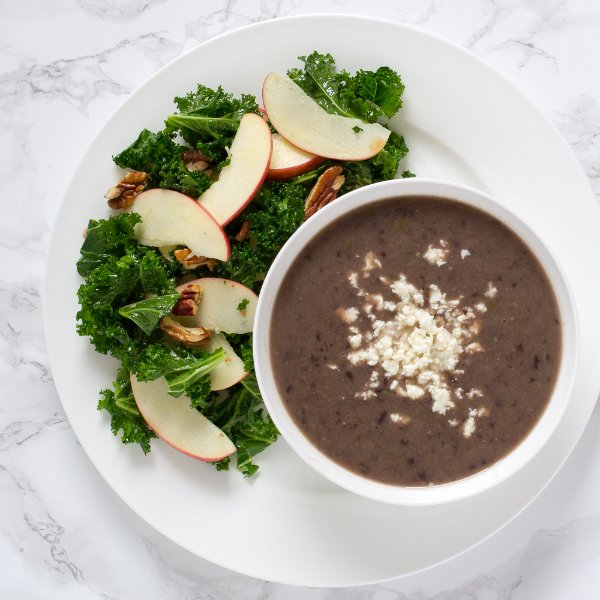

Black Bean Soup with Feta & Kale, Apple & Pecan Salad

Total Time
40 min
Nutrition (per serving)
545.5 kcalCalories
20.4 gProtein
61.7 gCarbs
26.9 gFat
Full nutrition table
| Calories | 545.5 kcal |
| Total fat | 26.9 g |
| Saturated fat | 7 g |
| Trans fat | 0.4 g |
| Cholesterol | 25.1 mg |
| Sodium | 816.8 mg |
| Carbohydrates | 61.7 g |
| Fiber | 18.9 g |
| Sugars | 16.1 g |
| Protein | 20.4 g |
| Potassium | 1086 mg |
| Calcium | 316 mg |
| Iron | 5.3 mg |
| Vitamin A | 407.8 IU |
| Vitamin C | 104 mg |
| Vitamin D | 4.5 IU |
Cookware
Ingredients
- 2 (15 oz) cansblack beans
- 16 fl ozchicken or vegetable broth
- 1 (4 oz) pkgcrumbled feta cheese
- 2Gala apples
- 2 clovesgarlic
- 2green bell peppers
- 1 bunchkale
- ¼ cuppecan halves
- 1 mediumyellow onion
- apple cider vinegar
- black pepper
- crushed red pepper
- cumin, ground
- extra virgin olive oil
- honey
- salt
Steps
- Wash and dry the fresh produce.2 green bell peppers
2 Gala apples
1 bunch kale - Quarter the bell peppers lengthwise; remove and discard the stem, seeds, and membranes. Small dice the peppers (cut into ¼-inch cubes) and transfer to a medium bowl.
- Preheat a medium saucepan over medium-high heat.
- Trim off and discard the ends of the onion and remove the outer layer; small dice the onion (cut into ¼-inch cubes) and add to the bell peppers.1 medium yellow onion
- Once the saucepan is hot, add olive oil and swirl to coat the bottom.1 tbsp extra virgin olive oil
- Add the bell peppers and onion to the saucepan; cook, stirring frequently, until softened, 3 to 4 minutes.
- Trim off and discard the root ends of the garlic; peel and mince or press the garlic.2 cloves garlic
- Add the garlic, cumin, and crushed red pepper to the saucepan; cook, stirring constantly, until fragrant, 15 to 30 seconds.1 tsp cumin
½ tsp crushed red pepper - Add the broth and beans (with their liquid) to the saucepan; season with salt and pepper. Increase the heat to high and bring to a boil. Once boiling, reduce to a simmer, cover, and cook for 15 minutes.16 fl oz (2 cups) chicken or vegetable broth
2 (15 oz) cans black beans
1 tsp salt
½ tsp black pepper - In a large salad bowl, combine and whisk together olive oil, apple cider vinegar, honey, salt, and pepper.3 tbsp extra virgin olive oil
1 tbsp apple cider vinegar
1 tsp honey
½ tsp salt
¼ tsp black pepper - Cut out and discard the kale stems; chop the leaves crosswise into ½-inch strips. Add the kale to the salad bowl and, using your hands, massage the dressing into the leaves.
- Quarter the apples lengthwise, then cut out the core and stem from each section; cut each quarter lengthwise into thin wedges. Add to the salad bowl.
- Roughly chop the pecans and add to the salad bowl. Toss the salad to combine.¼ cup pecans, dry roasted
- Using an immersion (hand) blender, purée the soup until the desired consistently is reached. Alternatively, mash the beans with a potato masher.
- To serve, divide the soup between bowls and garnish with feta. Serve with the kale salad on the side. Enjoy!1 (4 oz) pkg crumbled feta cheese